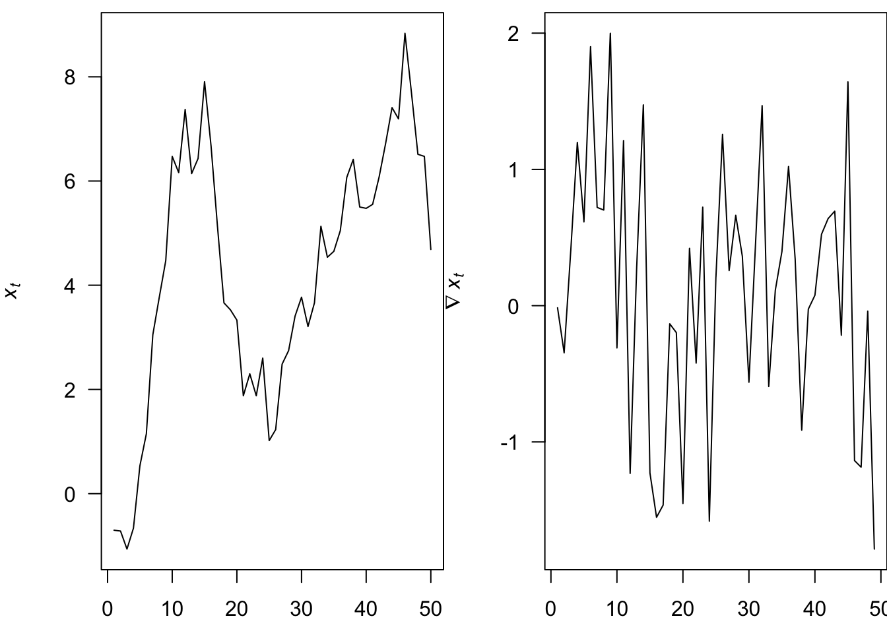

Set 3 ARMA
3.1 Operators
3.1.1 Backshift operator
The backshift shift operator (\(\mathbf{B}\)) is an important function in time series analysis, which we define as
\[ \mathbf{B} x_t = x_{t-1} \]
or more generally as
\[ \mathbf{B}^k x_t = x_{t-k} \]
For example, express a random walk, \(x_t = x_{t-1} + w_t\), using \(\mathbf{B}\).
3.1.2 The difference operator
The difference operator (\(\nabla\)) is another important function in time series analysis, which we define as
\[ \nabla x_t = x_t - x_{t-1} \]
For example, what does first-differencing a random walk yield?
The difference operator and the backshift operator are related
\[ \nabla^k = (1 - \mathbf{B})^k \] Differencing is a simple means for removing a trend
The 1st-difference removes a linear trend
A 2nd-difference will remove a quadratic trend

3.2 Autoregressive (AR) models
An autoregressive model of order p, or AR(p), is defined as
\[x_t = \phi_1 x_{t-1} + \phi_2 x_{t-2} + \dots + \phi_p x_{t-p} + w_t\]
where we assume
\(w_t\) is white noise
\(\phi_p \neq 0\) for an order-p process
3.2.1 AR(1) Model
Let’s start by figuring out some properties of the simplest AR model, the AR(1) model:
\[x_t = \phi_0 + \phi_1 x_{t-1} + w_t\]
We start by assuming that \(x_t\) is a stationary time series. Under this assumption, we can show:
\[\begin{align} E(x_t) &= \frac{\phi_0}{1-\phi_1} \\ Var(x_t) &= \frac{\sigma^2_w}{1-\phi_1^2} \\ \rho(h) &= \phi_1^h \end{align}\]
For this to work, \(|\phi_1| < 1\).
3.2.2 Stationarity
We seek a means for identifying whether our AR(p) models are also stationary. We can write out an AR(p) model using the backshift operator:
\[ x_t = \phi_1 x_{t-1} + \phi_2 x_{t-2} + \dots + \phi_p x_{t-p} + w_t \\ \Downarrow \\ \begin{align} x_t - \phi_1 x_{t-1} - \phi_2 x_{t-2} - \dots - \phi_p x_{t-p} &= w_t \\ (1 - \phi_1 \mathbf{B} - \phi_2 \mathbf{B}^2 - \dots - \phi_p \mathbf{B}^p) x_t &= w_t \\ \phi_p (\mathbf{B}^p) x_t &= w_t \\ \end{align} \]
If we treat \(\mathbf{B}\) as a number (or numbers), we can out write the characteristic equation as \(\phi_p (\mathbf{B}^p)\).
To be stationary, all roots of the characteristic equation must exceed 1 in absolute value
Example, for what value of \(\phi_1\) is AR(1) model stationary?

3.3 Moving Average (MA) models
A moving average model of order q, or MA(q), is defined as
\[ x_t = w_t + \theta_1 w_{t-1} + \theta_2 w_{t-2} + \dots + \theta_q w_{t-q}\] where \(w_t\) is white noise
Each of the \(x_t\) is a sum of the most recent error terms
Thus, all MA processes are stationary because they are finite sums of stationary WN processes
3.3.3 Invertibility
For MA models, we need invertibility in order to identify model paramters. An MA(q) process is invertible if it can be written as a stationary autoregressive process of infinite order without an error term
\[ x_t = w_t + \theta_1 w_{t-1} + \theta_2 w_{t-2} + \dots + \theta_q w_{t-q} \\ \Downarrow ? \\ w_t = x_t + \sum_{k=1}^\infty(-\theta)^k x_{t-k} \]
For example, these MA(1) models are equivalent
\[ x_t = w_t + \frac{1}{5} w_{t-1} ~\text{with} ~w_t \sim ~\text{N}(0,25) \\ \Updownarrow \\ x_t = w_t + 5 w_{t-1} ~\text{with} ~w_t \sim ~\text{N}(0,1) \]
The variance of \(x_t\) is given by
\[ x_t = w_t + \frac{1}{5} w_{t-1} ~\text{with} ~w_t \sim ~\text{N}(0,25) \\ \Downarrow \\ \begin{align} \text{Var}(x_t) &= \text{Var}(w_t) + \left( \frac{1}{25} \right) \text{Var}(w_{t-1}) \\ &= 25 + \left( \frac{1}{25} \right) 25 \\ &= 25 + 1 \\ &= 26 \end{align} \]
The variance of \(x_t\) is given by
\[ x_t = w_t + 5 w_{t-1} ~\text{with} ~w_t \sim ~\text{N}(0,1) \\ \Downarrow \\ \begin{align} \text{Var}(x_t) &= \text{Var}(w_t) + (25) \text{Var}(w_{t-1}) \\ &= 1 + (25) 1 \\ &= 1 + 25 \\ &= 26 \end{align} \]
We can rewrite an MA(1) model in terms of \(x\)
\[ x_t = w_t + \theta w_{t-1} \\ \Downarrow \\ w_t = x_t - \theta w_{t-1} \\ \]
And now we can substitute in previous expressions for \(w_t\)
\[ \begin{align} w_t &= x_t - \theta w_{t-1} \\ & \Downarrow \\ w_{t-1} &= x_{t-1} - \theta w_{t-2} \\ & \Downarrow \\ w_t &= x_t - \theta (x_{t-1} - \theta w_{t-2}) \\ w_t &= x_t - \theta x_{t-1} - \theta^2 w_{t-2} \\ & ~~\vdots \\ w_t &= x_t - \theta x_{t-1} - \dots -\theta^k x_{t-k} -\theta^{k+1} w_{t-k-1} \\ \end{align} \]
If we constrain \(\lvert \theta \rvert < 1\), then
\[ \lim_{k \to \infty} (-\theta)^{k+1} w_{t-k-1} = 0 \]
and
\[ \begin{align} w_t &= x_t - \theta x_{t-1} - \dots -\theta^k x_{t-k} -\theta^{k+1} w_{t-k-1} \\ & \Downarrow \\ w_t &= x_t - \theta x_{t-1} - \dots -\theta^k x_{t-k} \\ w_t &= x_t + \sum_{k=1}^\infty(-\theta)^k x_{t-k} \end{align} \]